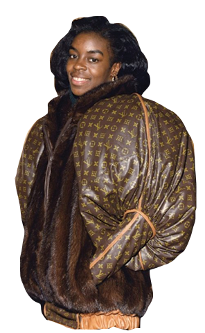
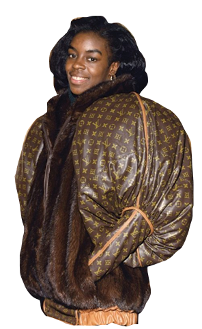

CANAL
STREET
Canal Street is one of the many streets around Chinatown and Soho in New York where one can find a wide selection of counterfeit bags, belts, wallets, and other bootleg designer goods for illegal sale. Unlike Dapper Dan’s bootleg designs which were made to take power away from the big name luxury designers, these bags are made to deceive. They are exact copies, and to the untrained eye, one might not tell the difference between a fake and a real. Even Dapper Dan’s customers understood the power and status one receives when wearing a logo of such high esteem, but for many, the price range is what makes it so unattainable. We all want power, but not all of us can afford the real thing, so a lot of times, the fake will suffice. During the Bloomberg era in New York City, the police cracked down on the sale of counterfeit bags, but the practice certainly has not gone away.
Many fashions fanatics see counterfeit culture as an extremely disrespectful act. In a recent interview with a number of Parsons fashion design students, a sophomore sees the issue as “just plain wrong. If you know anything about the designer, or if you care at all about fashion, you will recognize there is artistry to it. A lot of thought and care went into designing these bags, and buying a fake throws all of that away”. Another student, currently a senior said “I personally just think it’s tacky and vain. Why would you want to wear something that is fake? It mostly just says ‘I’m only wearing this because it makes other people think I have money’. Is that all you care about?”
After taking it to the streets to get both sides of the story, it appears that the buyers of these counterfeit bags do so for a number of reasons. A mother and a daughter found purchasing a counterfeit Gucci belt on Lafayette were interviewed on their reasoning behind purchase. The mother responded with “She always asks me to buy her one, and I say to her, I can’t afford that, but when we saw this guy selling them today, I knew I had to. Plus, look at it, you can’t even tell the difference!” The daughter seemed quite pleased with the purchase as well. “I don’t really mind that it's not real, I mostly just like the look of it.” After asking the daughter what it was about the ‘look’ of the belt that made her like it so much, she answered with “ I love Gucci, I see a lot of like celebrities and people on Instagram wearing them, you know?”
Another family was found up the block purchasing an impressive knock-off of a Louis Vuitton handbag. The woman purchasing the purse said “Everyone’s gonna think I can afford a Louis, how cool is that! I feel like a Kardashian.”

 
